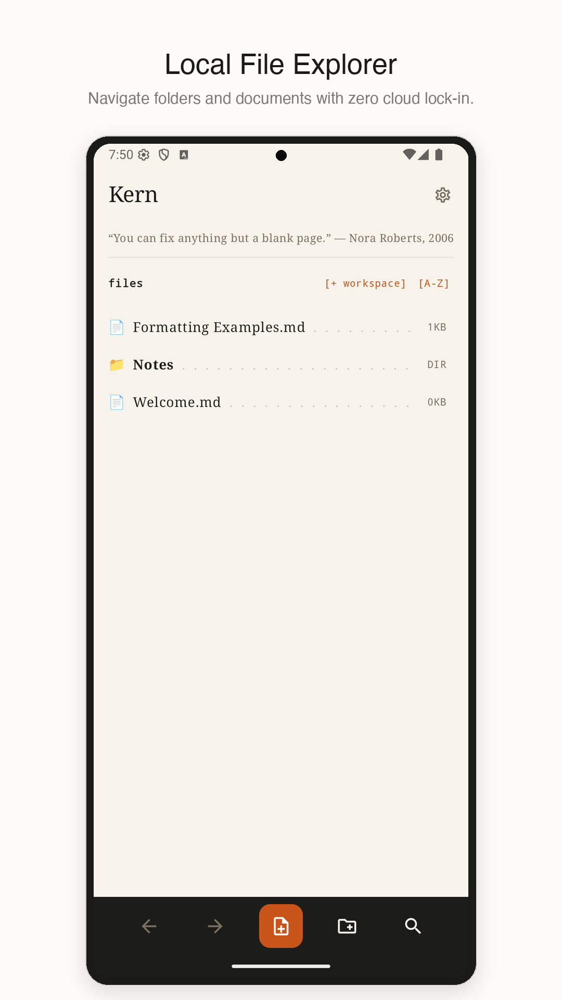
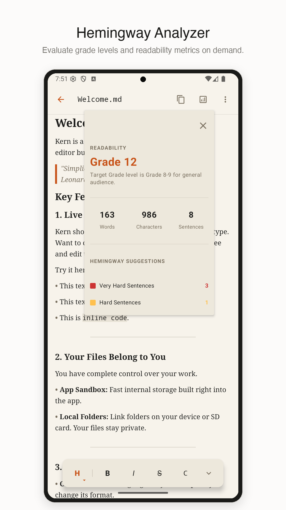
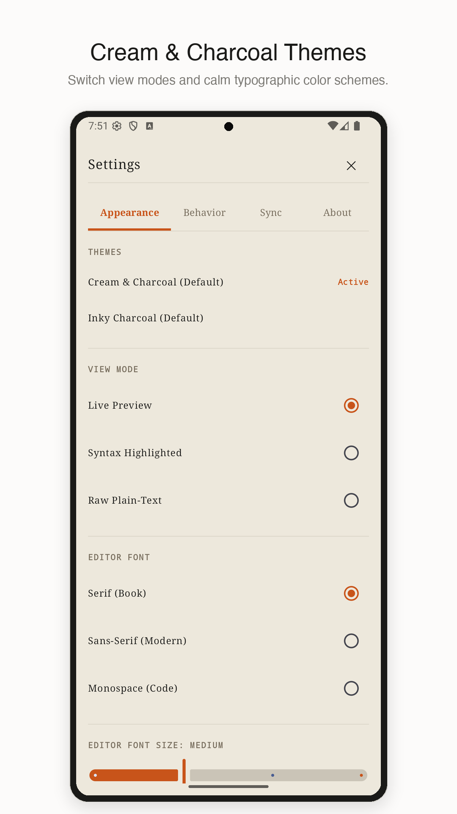

Files and editor, kept close.
Move between project files and your document without leaving the writing surface.
Open source
Write and edit Markdown on Android. Kern shows formatted text as you type and opens files from folders you choose.

What Kern does
Write in Markdown and see headings, emphasis, lists, and code take shape as you type.
Open and edit files from folders you select through Android’s file access system.
Read the code, follow development, and send feedback on GitHub.
In the app

Move between project files and your document without leaving the writing surface.

See the shape of your writing with calm typography and useful readability signals.

Adjust themes and typography until the document feels right for the way you work.
Live review
Move over the preview to reveal the source syntax in place, just like Kern on Android.
Write in Markdown and see the result as you go.
Write clearly. Keep your files close.
Privacy
Kern does not upload document contents to its servers or require an account. You choose where your files are stored. See the privacy policy for analytics and diagnostics.
Read the privacy policy →Support
Email gary@attach.design or open an issue on GitHub.